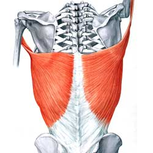
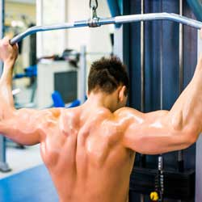
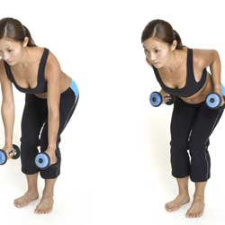
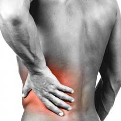
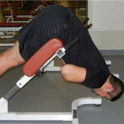
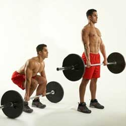
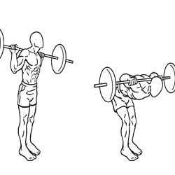

| Home | Workouts | Good Food Diets | |
|
|||
|
|
BackLats (Upper back)Pulldown machineThe pulldown is performed while seated by pulling a wide bar down towards the upper chest or behind the neck. This is a compound exercise that also involves the biceps, forearms, and the rear deltoids. Equipment: cable machine or pulldown machine. Major variants: chin-up or pullup (using the body weight while hanging from a high bar), close grip ~ (more emphasis on the lower lats), reverse grip ~ (more emphasis on the biceps). The Pull-up is performed by hanging from a chin-up bar above head height with the palms facing forward (supinated) and pulling the body up so the chin reaches or passes the bar. The pull-up is a compound exercise that also involves the biceps, forearms, traps, and the rear deltoids. A chin-up (palms facing backwards) places more emphasis on the biceps and a wide grip pullup places more emphasis on the lats. As beginners of this exercise are often unable to lift their own bodyweight, a chin-up machine can be used with counterweights to assist them in the lift. Equipment: chin-up bar[8] or chin-up machine. Dumbbell bent-over rowThe bent-over row is performed while leaning over, holding a weight hanging down in one hand or both hands, by pulling it up towards the abdomen. This is a compound exercise that also involves the biceps, forearms, traps, and the rear deltoids. The torso is unsupported in some variants of this exercise, in which case lifting belts are often used to help support the lower back. Equipment: dumbbell, barbell, Smith machine or T-bar machine. Major variants: cable row (using a cable machine while seated). Lower backBack extensionBack extension on a Roman chair The back extension is performed while lying face down partway along a flat or angled bench, so that the hips are supported and the heels secured, by bending down at the waist and then straightening up again. This is a compound exercise that also involves the glutes. Equipment Body weight, dumbbell or back extension machine. Major variants Without bench (lying face down on the floor). DeadliftThe deadlift is a very effective compound exercise for strengthening the lower back, but also exercises many other major muscle groups, including quads, hamstrings and abdominals. It is a challenging exercise, as poor form or execution can cause serious injury.[9] A deadlift is performed by grasping a dead weight on the floor and, while keeping the back very straight, standing up by contracting the erector spinae (primary lower back muscle). When performed correctly the role of the arms in the deadlift is only that of cables attaching the weight to the body; the musculature of the arms should not be used to lift the weight. There is no movement more basic to everyday life than picking a dead weight up off of the floor, and for this reason focusing on improving one's deadlift will help prevent back injuries. Good-morningThe Good-morning is a weight training exercise in which a barbell, two dumbbells, or no weight at all is held on the shoulders, behind the head. The person bends forward and bows at the hips and recovers to upright. The good-morning is so called because the movement resembles bowing to greet someone. It involves the hamstrings but is primarily used to strengthen the lower back; the degree of knee bend used will change the focus – nearly straight-legged involving the hamstrings most.
|